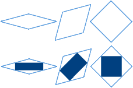
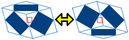
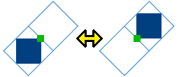

概要
東京オリンピック(2020年)のエンブレムにちなんだパズルです。
遊び方
- このパズルは、菱形の形状をしたピースが敷き詰められた構造になっています。菱形の中に何も描かれていないピースと、藍色の長方形が描かれているピースがあります。(※オプションにより、薄い色で表示されているピースが存在する場合があります。)

-
赤い点や緑の点をクリックし、ピースを動かします。
- 【赤い点(□)】3つの互いに隣接したピースの位置を、赤い点を中心として180度入れ替えます。

- 【緑の点(■)】2つの隣接したピースの位置を、緑の点を中心として180度入れ替えます。

-
藍色の長方形だけに注目したときにオリンピックのエンブレムの模様になっていれば完成です。
| 初期状態 |
完成状態 |
パラリンピックの
エンブレム |
オリンピックの
エンブレム |
|
|
|
-
赤い点や緑の点は、「その操作が可能で、操作の結果、操作前と異なった模様になる場所」に自動的に生じます。
- 点から多少離れた位置をクリックしてもOKです。スマホでも遊びやすいと思います。
- 完成状態の表示方法はオプションで変更できます。
このプログラムの作者
既知の不具合
- スマホで、画面を傾けたときに正しくリサイズされない場合があります (iPhoneの場合、Safariでは問題ない様子)。
- IE8以下で動作しません。(※対応予定はありません。新しいブラウザをご利用ください。)
不具合を発見された場合は、報告していただけると幸いです。よろしくお願いします。
要望がある場合も是非。
Twitterで気軽にリプライしていただいて構いません。
ちなみに、ハッシュタグは#tyo2020pzlに決定しました(よんますさん、ありがとうございます)。
改善したい内容
- LoadやUndoやRedoの処理速度向上。
- 奇数レベルへの対応。
- レベル6, レベル12以外の完成形の定義。
謝辞
- パズルの作成に際し、よんますさん(@yonmas)とTokusiNさん(@toku51n)にお世話になりました。お二方のおかげで完成可能なパズルに仕上げることが出来ました。
- みずすましさん(@nosiika)のツイートや、松川昌平さん(@sho000)のツイートが、パズルの作成のきっかけになりました。
- エンブレム作者の野老朝雄さん(@asaoTOKOLO)さんがいなければこのパズルが作られることはありませんでした。
- Twitterでエンブレムの話題が盛り上がっていたことが、このパズルを作成するモチベーションになりました。
- オプションの実装の一部で、がおさん(@gaogao_9)がQiitaに書いた方法を利用しました。
皆様に厚くお礼申し上げます。ありがとうございました。
記録集
沢山遊んでくださり、ありがとうございます！
2016/05/29現在、ノーマルモードにおいて、85手で完成する手順が知られています。84以下で完成させることが可能か否かは判っていません。
以下の手順のURLは、ページが読み込まれた直後は完成形になっています。セーブデータのUndo機能を使うことで、巻き戻しながら手順を確認できます。
いろんな模様
リンク集